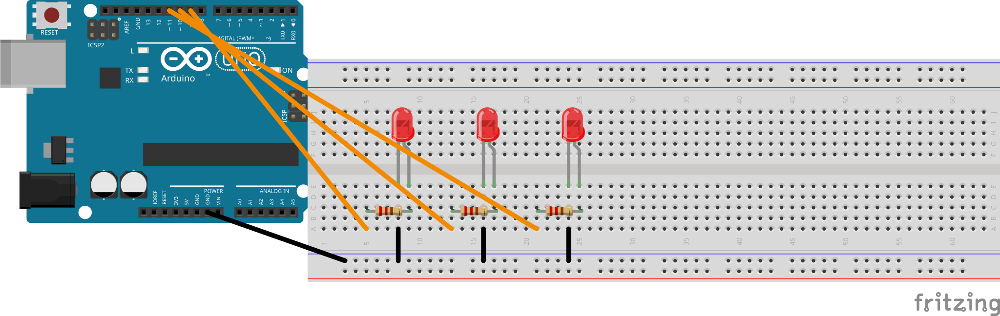

Project #1 — Light Signals: Option B (chasing) — extra wiring
Wire the third LED
Project 1 • Light Signals
Only do this card if you picked Option B — chasing pattern. You add a third LED on pin 11 — same wiring pattern as LEDs 1 and 2.
Skip this card if you chose Option A or Option C.
Option A (alternating) only needs two LEDs — you are done with wiring. Option C (breathing) only needs one LED — you are done with wiring.
What to do
Pick a third LED from your parts tray — a third colour, different from LEDs 1 and 2 (so you can see the chase clearly).
Pick another 220 Ω resistor (red · red · brown colour bands).
Plant the third LED in the breadboard, one row away from the second LED. Legs in different rows, like Milestones 3 and 5.
Connect the long leg (+) of the third LED to the Arduino's digital pin 11, through the 220 Ω resistor.
Connect the short leg (−) of the third LED to the Arduino's GND.
Wiring diagram
Arduino pin 9 ───[220 Ω]───┬─── LED 1 long leg
▼
LED 1 short leg ─── Arduino GND
Arduino pin 10 ───[220 Ω]───┬─── LED 2 long leg
▼
LED 2 short leg ─── Arduino GND
Arduino pin 11 ───[220 Ω]───┬─── LED 3 long leg
▼
LED 3 short leg ─── Arduino GND

Pin 9 → 220 Ω → LED 1 · Pin 10 → 220 Ω → LED 2 · Pin 11 → 220 Ω → LED 3. All short legs → Arduino GND.
What you should see
Three LEDs in three different colours, planted side by side on the breadboard, each with its own 220 Ω resistor going to a different pin (9, 10, 11). None of them is lit yet — the sketch that chases them comes when you upload the chasing starter from Milestone 2.
Done when
Three LEDs on the breadboard, one row apart each, three different colours
LED 3's long leg goes through a 220 Ω resistor to pin 11
LED 3's short leg goes to GND
The first two LEDs are still wired on pins 9 and 10
Stuck?
The wiring is the same pattern as Milestones 3 and 5 — just one more row over, on pin 11. If one of the earlier LEDs stopped working while you were wiring this one, a jumper wire probably came loose — re-seat it. Call the teacher if you need help.